الفهرس
- قبل البدء: تهيئة النظام والتهيئة الأولى
- التعرف على واجهة النظام
- الإعدادات العامة
- المؤسسة: الفروع والأقسام والرتب والدوام
- الموظفون وملف الموظف
- نقل الموظف بين الفروع ومزامنة البصمة
- الترقيات وزيادات الرواتب
- أجهزة البصمة وربط الوسيط
- الحضور والبصمة
- الإجازات
- المهام والطلبات
- الرواتب
- المستحقات والخصومات
- التقارير
- الإشعارات
- المستخدمون والصلاحيات
- خدمتي الذاتية
- إدارة الحسابات (اختياري)
- حل المشكلات الشائعة
- ملحق: الحقول الإلزامية في كل شاشة
1 قبل البدء: تهيئة النظام والتهيئة الأولى
يعمل نظام Tageep HRMS داخل المتصفح على خادم الشركة، ولا يحتاج تثبيتًا على جهاز الموظف. كل البيانات (الموظفون، الحضور، الرواتب، الإجازات) تُحفظ في قاعدة بيانات الخادم، ويُشفّر التخزين وكلمات المرور تلقائيًا.
المتطلبات قبل أول استخدام
- رابط النظام من مسؤول التقنية (مثال:
http://192.168.0.248:8001/hrpro). - حساب مدير النظام الأول (يُنشأ من شاشة التهيئة عند أول فتح).
- شعار الشركة بصيغة صورة، واسم مدير الموارد البشرية والمدير العام لتوقيع المطبوعات.
- قائمة الفروع والأقسام والرتب وأوقات الدوام قبل إدخال الموظفين.
إنشاء حساب المدير الأول
عند فتح النظام لأول مرة تظهر شاشة التهيئة بدلًا من تسجيل الدخول:
- أدخل اسم الشركة كما تريده أن يظهر في القائمة الجانبية والمطبوعات.
- أدخل اسمك الكامل (سيظهر في سجل التدقيق وفي «طُبع بواسطة»).
- اختر اسم الدخول (مثال:
admin). - أدخل كلمة مرور من 8 أحرف على الأقل وتحتوي رقمًا.
- اضغط «إنشاء الحساب وبدء الاستخدام» — سيُفتح النظام مباشرة بحساب مدير كامل الصلاحيات.
تسجيل الدخول اليومي
في كل مرة تُفتح فيها الصفحة تظهر شاشة ترحيب قصيرة تحمل عبارة «اذكر الله وصلِّ على النبي ﷺ» ثم تختفي بعد ثلاث ثوانٍ، ويعود آخر جلسة إن كانت صالحة. للدخول أدخل اسم المستخدم وكلمة المرور.
2 التعرف على واجهة النظام
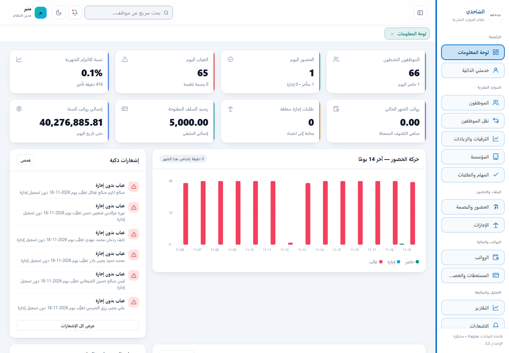
عناصر الواجهة الثابتة
| العنصر | الوظيفة |
|---|---|
| القائمة الجانبية | تجميع الشاشات في مجموعات: الرئيسية، الموارد البشرية، الوقت والحضور، الرواتب والمالية، التحليل والمتابعة، الإدارة، المالية والمحاسبة. تظهر الشاشات حسب صلاحية المستخدم فقط. |
| زر تصغير القائمة | يوسّع مساحة العمل ويُحفظ الاختيار في المتصفح. |
| البحث السريع | بحث فوري بالاسم أو الرقم الوظيفي أو الهوية، وينتقل لملف الموظف عند الضغط على Enter. |
| زر «دليل الاستخدام» | بجانب البحث — يفتح هذا الدليل داخل النظام، ومنه زر العودة للرئيسية وزر تنزيل PDF. |
| الإشعارات | جرس بعدد التنبيهات غير المقروءة، وفتح لوحة سريعة مع زر «فحص ذكي». |
| الوضع الليلي | تبديل فوري بين الفاتح والداكن ويُحفظ للجلسة القادمة. |
| الحساب الشخصي | بيانات المستخدم والدور والفرع وآخر دخول، وتغيير كلمة المرور وتسجيل الخروج. |
| شريط التبويبات | كل شاشة تُفتح في تبويب يمكن إغلاقه، ما يتيح العمل على أكثر من شاشة. |
لوحة المعلومات
- بطاقات المؤشرات: الموظفون النشطون، الحضور والغياب اليوم، نسبة الالتزام الشهرية.
- المالية: رواتب الشهر الحالي، رصيد السلف المفتوحة، إجمالي رواتب السنة.
- حركة الحضور: رسم بياني لآخر 14 يومًا (حاضر/إجازة/غائب).
- تنبيهات المستندات والعقود: عقود ومستندات تنتهي خلال 60 يومًا مع عددها.
- حضور اليوم: جدول بوقت الدخول والخروج والتأخير لكل موظف.
3 الإعدادات العامة
الإدارة ← الإعدادات ← عام
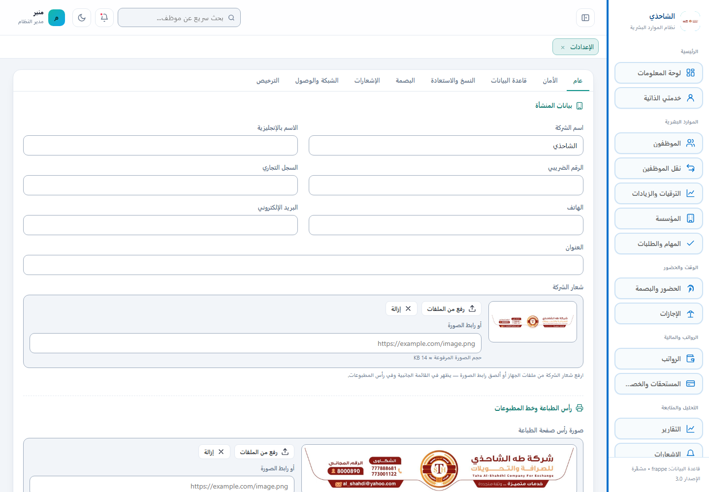
بيانات المنشأة
- اسم الشركة (يظهر في القائمة الجانبية) والاسم بالإنجليزية.
- الرقم الضريبي والسجل التجاري والهاتف والبريد والعنوان — تظهر في رأس المطبوعات.
- شعار الشركة: ارفع صورة أو ألصق رابطًا، ويظهر في القائمة الجانبية والمطبوعات.
رأس الطباعة والتوقيعات
- صورة رأس صفحة الطباعة (مقاس مقترح 1600×220) وارتفاعها بالبكسل.
- نوع الخط وحجمه لكل التقارير والكشوف.
- اسم مدير الموارد البشرية واسم المدير العام / نائبه: يظهران في توقيع أسفل كل صفحة مطبوعة، ويُكتب تحت التوقيع اسم المستخدم الذي طبع الورقة ووقت الطباعة.
العمل والدوام
| الحقل | الأثر |
|---|---|
| العملة | تظهر مع كل المبالغ في النظام والتقارير والمطبوعات. |
| بداية اليوم التشغيلي | تحدد متى يُعتبر يوم العمل قد بدأ (لمن يعملون بعد منتصف الليل). |
| فترة السماح للتأخير / الانصراف المبكر | دقائق لا تُحتسب تأخيرًا أو انصرافًا مبكرًا. |
| أيام الخصم لكل غياب | عدد الأيام التي تُخصم من الراتب عند الغياب. |
| بداية تتبع الحضور | لا يُحتسب غياب قبل هذا التاريخ (مهم عند بدء التشغيل). |
| حد الغياب العام | عند تجاوز دقائق التأخير هذا الحد يُحتسب اليوم غيابًا (0 = معطّل). |
| أيام العطلة الأسبوعية | تُستثنى من احتساب الغياب والإجازات. |
| نسب التأمينات وسقفها وحدها الأدنى | تُستخدم في كشوف الرواتب وملخص التأمينات. |
تبويبات الإعدادات الأخرى
- الأمان: تغيير كلمة المرور، حالة تشفير التخزين، نوع قاعدة البيانات وآخر حفظ.
- قاعدة البيانات: نوع القاعدة الحالية واختبار الاتصال والتبديل مع ترحيل البيانات.
- النسخ والاستعادة: إنشاء نسخة مشفّرة واستعادة نسخة سابقة.
- البصمة: نوع الجهاز وIP والمنفذ ومفتاح واجهة الاستقبال، مع لوحة رابط الربط للوسيط.
- الإشعارات: تشغيل التنبيهات الذكية وحدودها الزمنية.
- الشبكة والوصول: عنوان النظام والمنافذ المسموحة للوسيط والأجهزة.
- الترخيص: الرقم التسلسلي وحالة التفعيل.
4 المؤسسة: الفروع والأقسام والرتب والدوام
الموارد البشرية ← المؤسسة
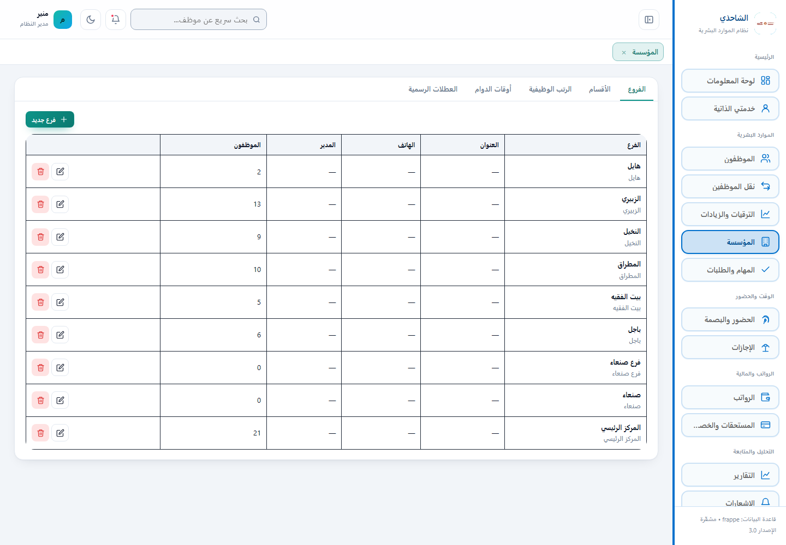
الفروع
- افتح تبويب «الفروع» واضغط «فرع جديد».
- أدخل اسم الفرع (إلزامي) مثل «المركز الرئيسي» أو «فرع عدن».
- أضف الرمز والعنوان والهاتف ومدير الفرع وحدّد «نشط».
- احفظ — يظهر الفرع مباشرة في قوائم الموظفين وأجهزة البصمة والتقارير.
الأقسام
- تبويب «الأقسام» ← «قسم جديد».
- أدخل اسم القسم (إلزامي)، واختر الفرع ومركز التكلفة والمدير.
الرتب الوظيفية
لكل رتبة اسم (إلزامي) وحد أدنى وأعلى للراتب ووصف؛ تُستخدم في الترقيات وتقارير الهيكل الوظيفي.
أوقات الدوام
- «دوام جديد» ثم أدخل اسم الدوام، مثل «إداري 8–5».
- أضف فترة أو أكثر: اسم الفترة، وقت البداية والنهاية (ويدعم الفترات المتعددة والليلية).
- احفظ — يحسب النظام ساعات الدوام المطلوبة تلقائيًا ويظهر عدد الموظفين المرتبطين به.
العطلات الرسمية
أدخل المناسبة والتاريخ (إلزاميان)، وحدّد الفرع (أو كل الفروع) وهل هي مدفوعة.
5 الموظفون وملف الموظف
الموارد البشرية ← الموظفون
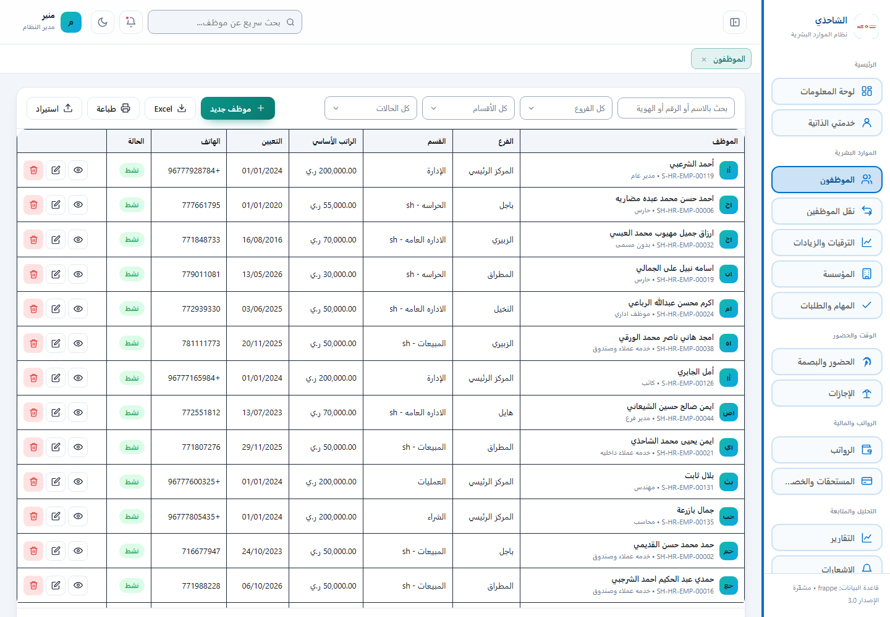
البحث والتصفية
- بحث فوري بالاسم أو الرقم الوظيفي أو رقم الهوية أو الهاتف.
- فلاتر: الفرع، القسم، الحالة (نشط/منتهي).
- أسفل الجدول إجمالي عدد الموظفين وإجمالي الرواتب وفق الفلتر الحالي.
إضافة موظف جديد
- اضغط «موظف جديد» — يُفتح نموذج من ثلاث مجموعات: البيانات الأساسية، البيانات الوظيفية، الراتب والبيانات المالية.
- أدخل الاسم الكامل والرقم الوظيفي (إلزاميان). الرقم الوظيفي هو نفسه رقم الموظف على جهاز البصمة، لذا يجب أن يكون فريدًا ومطابقًا للجهاز.
- أكمل البيانات الاختيارية: الاسم بالإنجليزية، الهوية وتاريخ انتهائها، الميلاد، الجنس، الحالة الاجتماعية، الجنسية، الهاتف، البريد، العنوان.
- اختر الفرع (إلزامي)، ثم القسم والرتبة والمسمى والدوام والمدير المباشر.
- أدخل تاريخ التعيين والراتب الأساسي (إلزاميان)، وبيانات البنك والحساب عند الحاجة.
- اضغط «حفظ» — يُضاف الموظف للقائمة فورًا ويصبح جاهزًا للحضور والرواتب.
0105 يجب أن يُسجَّل بنفس
الرقم على جهاز البصمة في فرع عدن.
الحقول الإلزامية في نموذج الموظف
| الحقل | إلزامي | ملاحظة |
|---|---|---|
| الاسم الكامل | نعم | يظهر في كل الشاشات والتقارير. |
| الرقم الوظيفي (رقم البصمة) | نعم | فريد، ويطابق رقم الموظف في جهاز البصمة. |
| الفرع | نعم | يحدد نطاق البيانات وجهاز البصمة. |
| تاريخ التعيين | نعم | أساس حساب سنوات الخدمة والإجازات. |
| الراتب الأساسي | نعم | أساس كشوف الرواتب والبدلات النسبية. |
| القسم / الرتبة / الدوام / المدير | لا | يُنصح بتعبئتها لصحة التقارير. |
الاستيراد والتصدير
- استيراد: ملف Excel أو CSV بأعمدة الموظفين (الاسم، الرقم، الفرع، القسم، الراتب، تاريخ التعيين…).
- Excel: تنزيل القائمة الحالية بكل الأعمدة.
- طباعة: كشف أفقي برأس الشركة وتذييل التوقيعات واسم من طبع الورقة.
ملف الموظف
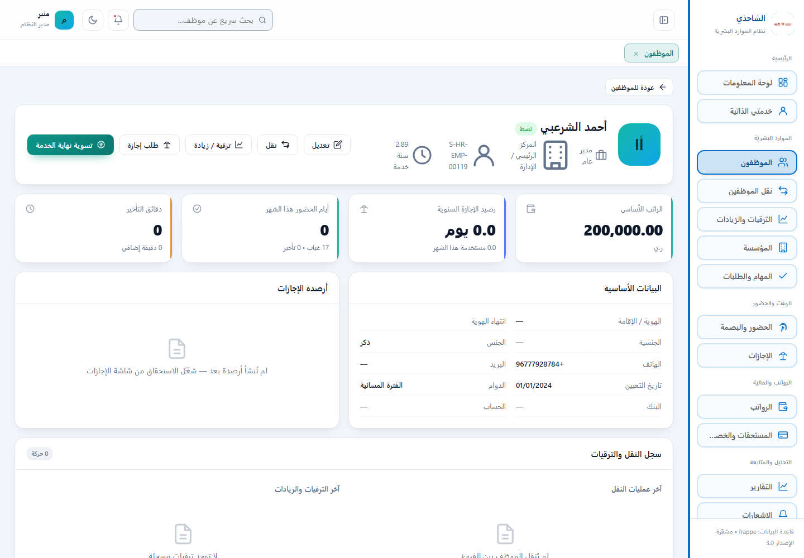
اضغط أيقونة العين بجانب الموظف لعرض:
- بطاقات: الراتب الأساسي، رصيد الإجازة السنوية، أيام الحضور، دقائق التأخير.
- البيانات الأساسية وأرصدة الإجازات لكل نوع وسنة.
- سجل النقل والترقيات مع حالة مزامنة البصمة.
- تبويبات: الحضور (سجل الشهر + معالجة بصمة)، كشوف الرواتب، الإجازات، المستندات، العقود، البدلات والخصومات والسلف.
- أزرار سريعة: تعديل، نقل، ترقية/زيادة، طلب إجازة، تسوية نهاية الخدمة.
إضافة مستند للموظف
من تبويب «المستندات» ← «إضافة مستند»، أدخل اسم المستند (إلزامي) والرقم وتاريخي الإصدار والانتهاء؛ تنبّهك لوحة المعلومات قبل انتهاء المستندات.
6 نقل الموظف بين الفروع ومزامنة البصمة
الموارد البشرية ← نقل الموظفين — ويُتاح أيضًا من ملف الموظف بزر «نقل».
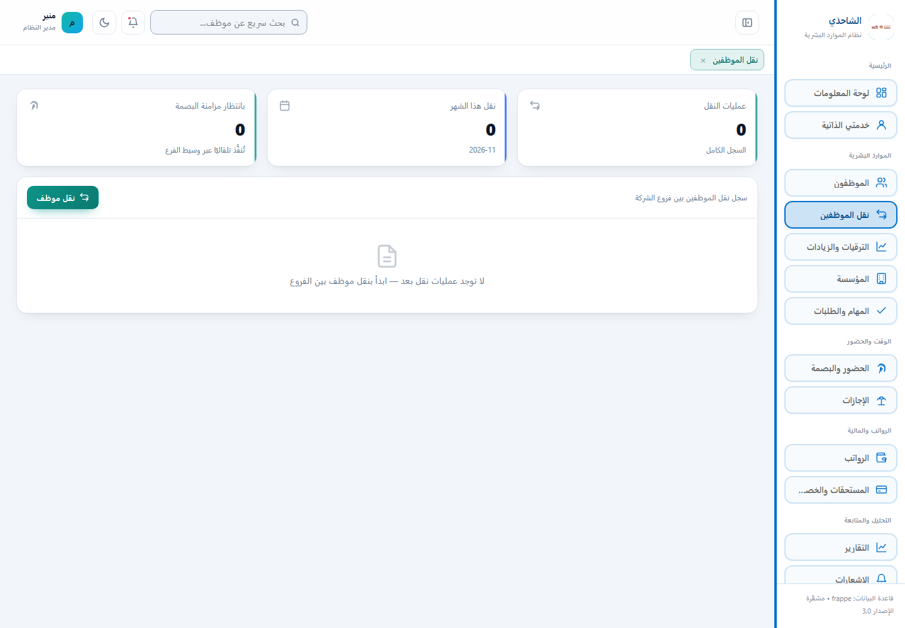
خطوات نقل موظف
- اضغط «نقل موظف» (أو زر «نقل» داخل ملف الموظف).
- اختر الموظف (إلزامي) — يظهر فرعه الحالي ورقم بصمته تلقائيًا.
- اختر الفرع الجديد (إلزامي)؛ لا يُقبل نفس الفرع الحالي.
- اختياريًا: القسم في الفرع الجديد والمسمى الوظيفي الجديد.
- أدخل تاريخ النقل (إلزامي) — يُطبَّق النقل فورًا ويُسجَّل التاريخ في السجل.
- اترك خيار «مزامنة رقم البصمة إلى جهاز الفرع الجديد» مفعّلًا.
- أدخل سبب النقل ثم اضغط «تنفيذ النقل».
معاني حالة المزامنة
| الحالة | المعنى | ما تفعله |
|---|---|---|
| غير مطلوبة | أُلغي خيار المزامنة عند النقل. | أضف الرقم يدويًا من شاشة أجهزة البصمة. |
| في الطابور | الأمر محفوظ بانتظار سحب الوسيط. | تأكد أن وسيط الفرع الجديد يعمل ومتصل بالخادم. |
| أُرسل للوسيط | سحبه الوسيط وينفّذه الآن. | انتظر دورة المزامنة (كل 10 ثوانٍ تقريبًا). |
| تمت المزامنة | أُضيف المستخدم إلى جهاز الفرع بنجاح. | سجّل بصمة الإصبع على الجهاز مرة واحدة (قالب الإصبع لا يُنقل عبر الشبكة). |
| فشلت المزامنة | تعذّر الوصول للجهاز أو الرقم مستخدم. | راجع اتصال الجهاز بالشبكة ورقم البصمة، ثم أعد المحاولة. |
| لا يوجد رقم بصمة | لا يوجد رقم بصمة ولا رقم وظيفي للموظف. | أضف رقمًا وظيفيًا/بصمة للموظف ثم أعد النقل. |
متطلبات عمل المزامنة تلقائيًا
- وجود جهاز بصمة مسجّل لنفس الفرع الجديد في شاشة «الحضور والبصمة ← أجهزة البصمة».
- تشغيل وسيط البصمة في الفرع (نسخة 2026 أو أحدث) ومعه ملف
config.jsonيحمل نفسhrpro_branch_idللفرع الجديد ومفتاح الواجهة. - اتصال الوسيط بالخادم وقراءة أوامر ناجحة (تظهر في سجل الوسيط: «تمت إضافة رقم البصمة…»).
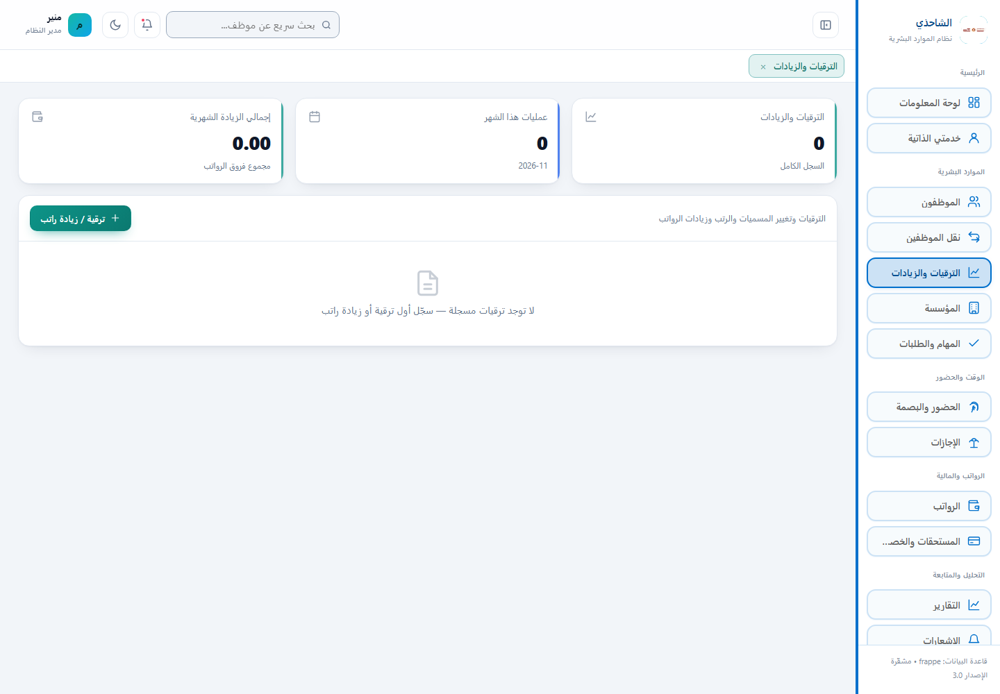
7 الترقيات وزيادات الرواتب
الموارد البشرية ← الترقيات والزيادات — أو زر «ترقية / زيادة» في ملف الموظف.
تسجيل ترقية أو زيادة
- اضغط «ترقية / زيادة راتب».
- اختر الموظف (إلزامي) — يظهر راتبه ومسماه وفرعه الحالي.
- اختر نوع التغيير (إلزامي): ترقية، زيادة راتب، زيادة بدل، تغيير رتبة، تغيير مسمى، أو ترقية وزيادة.
- غيّر ما يلزم: المسمى الجديد، الرتبة الجديدة، الراتب الأساسي الجديد.
- أدخل تاريخ سريان الترقية (إلزامي) ومبرّر الترقية.
- اضغط «تسجيل الترقية» — يُحدَّث ملف الموظف فورًا وتُسجَّل الزيادة ونسبتها في السجل.
| الحقل | إلزامي | ملاحظة |
|---|---|---|
| الموظف | نعم | — |
| نوع التغيير | نعم | يُستخدم في التصنيف والتقارير. |
| تاريخ السريان | نعم | الافتراضي اليوم. |
| أحد الحقول: مسمى / رتبة / راتب / قسم / دوام | نعم (واحد على الأقل) | لا يُحفظ تغيير فارغ. |
8 أجهزة البصمة وربط الوسيط
الوقت والحضور ← الحضور والبصمة ← أجهزة البصمة
تسجيل جهاز جديد
- اضغط «جهاز» وأدخل اسم الجهاز والفرع وعنوان IP (إلزامية).
- أدخل المنفذ (افتراضي 4370)، والنوع (ZKTeco/Hikvision/Anviz…)، وطريقة المزامنة (Push تلقائي)، وفعّل الجهاز.
- من قائمة الإجراءات اضغط «اختبار» للتحقق من الوصول ثم احفظ.
ربط الوسيط
- من «الإعدادات ← البصمة» اضبط نوع الجهاز وIP والمنفذ، وأنشئ مفتاح واجهة الاستقبال.
- انسخ رابط الربط ومعرّف الفرع من لوحة «ربط الوسيط» في نفس الشاشة.
- في جهاز الفرع ضع
config.jsonبجوارBiometricBridge.exeمع:hrpro_urlوhrpro_device_keyوhrpro_branch_idوdevice_ip. - شغّل الوسيط — يسحب البصمات كل فترة ويرفعها للنظام، ويسحب أوامر إضافة أرقام البصمة للموظفين المنقولين.
9 الحضور والبصمة
الوقت والحضور ← الحضور والبصمة
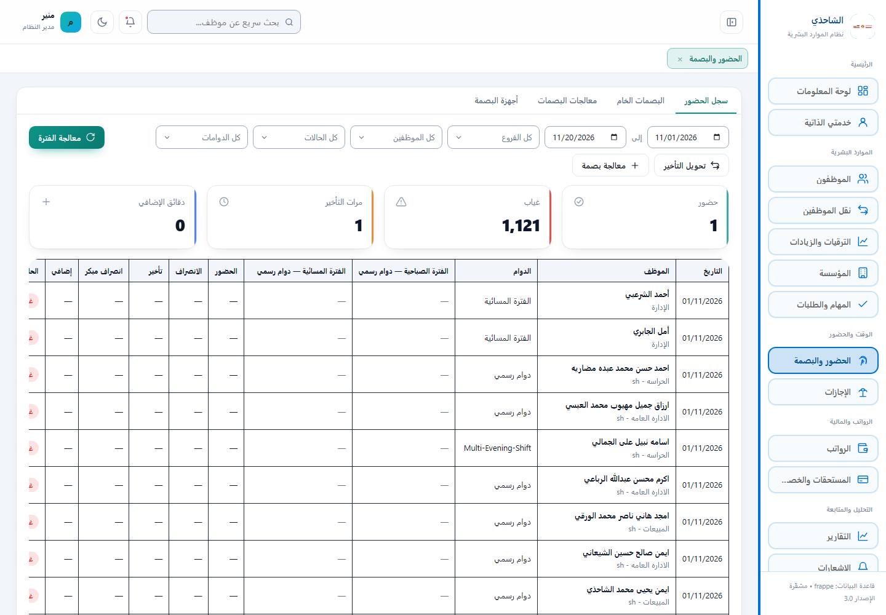
سجل الحضور
- حدّد الفترة (من/إلى) والفرع والموظف والحالة والدوام.
- اضغط «معالجة الفترة» ليحتسب النظام الحضور والغياب والتأخير من البصمات الخام وفق الدوام والعطلات.
- استخدم إجراءات الصف: «اعتبارها حاضر»، «نصف يوم»، أو «معالجة» لتصحيح يوم محدد.
- زر «تحويل التأخير» يحوّل التأخير المتراكم فوق الحد إلى رصيد إجازة حسب السياسة.
معالجة بصمة
حقول النموذج: الموظف، التاريخ، المعالجة (حاضر/غياب/إجازة/نصف يوم…) — إلزامية جميعها، مع وقت الدخول والخروج والسبب. تظهر المعالجة في تبويب «معالجات البصمات» بحالة اعتماد، ويمكن اعتمادها أو رفضها أو حذفها.
البصمات الخام
كل بصمة كما وصلت من الجهاز مع التاريخ والوقت والنوع والمصدر والجهاز — مفيدة لتشخيص البصمات الناقصة.
10 الإجازات
الوقت والحضور ← الإجازات
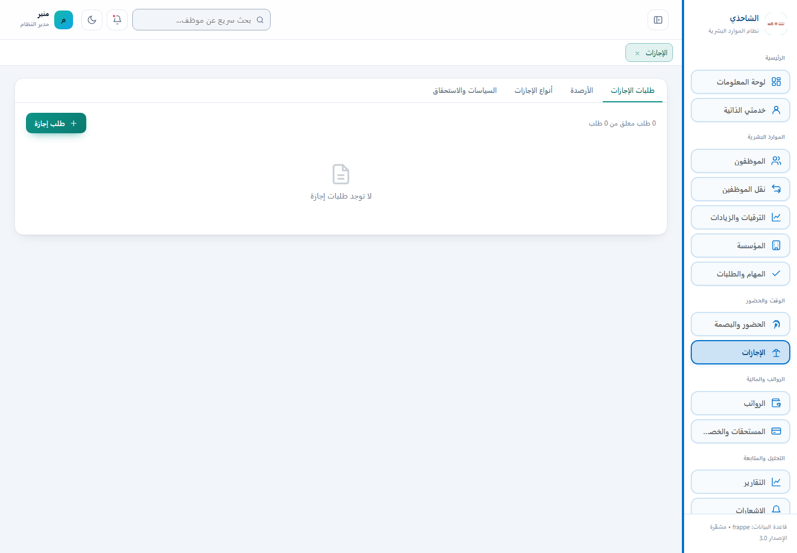
طلب إجازة
- اضغط «طلب إجازة» وأدخل الموظف ونوع الإجازة ومن تاريخ وإلى تاريخ (إلزامية).
- اختر المدة (يوم كامل أو نصف يوم) وأضف السبب.
- أرسل الطلب — يبقى «معلّقًا» حتى الاعتماد من شاشة الطلبات.
- للاعتماد: افتح تبويب «طلبات الإجازات» واضغط «اعتماد» أو «رفض» من إجراءات الصف.
الأرصدة والاستحقاق
- استحقاق الشهر: يضيف المستحق الشهري لكل الموظفين حسب نوع الإجازة.
- ترحيل سنوي: يرحّل الأرصدة المتبقية وفق حد الترحيل المحدد في نوع الإجازة.
- تسوية رصيد: إضافة أو خصم أيام يدويًا (الموظف والنوع وعدد الأيام إلزامية).
أنواع الإجازات
اسم النوع والأيام المستحقة سنويًا إلزاميان، مع طريقة الاستحقاق (سنوي/شهري/يدوي)، وهل مدفوعة، وحد الترحيل، وهل تحتاج اعتمادًا.
11 المهام والطلبات
الموارد البشرية ← المهام والطلبات
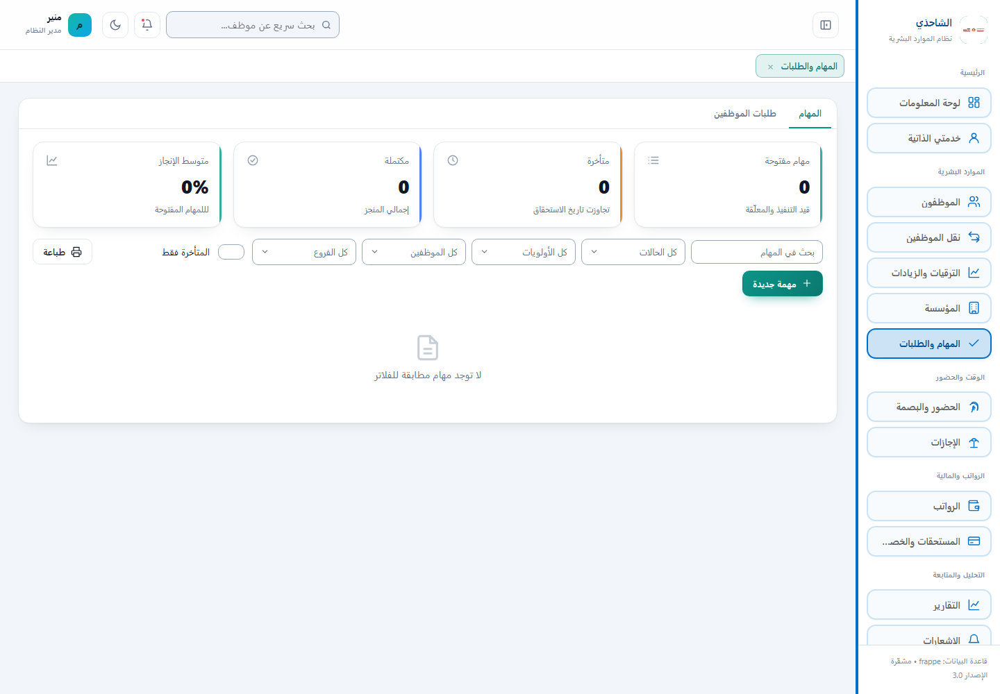
إسناد مهمة
- اضغط «مهمة جديدة» وأدخل عنوان المهمة والموظف المسؤول وتاريخ الاستحقاق (إلزامية).
- أضف الوصف والتصنيف والأولوية وتاريخ البدء ووقت الاستحقاق والساعات التقديرية.
- حدّد الحالة ونسبة الإنجاز ثم احفظ — تظهر المهمة للموظف في «خدمتي الذاتية».
تحديث الإنجاز
من جدول المهام اضغط «تحديث الإنجاز» لتغيير الحالة والنسبة وإضافة ملاحظة أو تعليق.
طلبات الموظفين
تبويب الطلبات يعرض طلبات السلف والشكاوى والطلبات العامة المقدّمة من الخدمة الذاتية، مع اعتماد أو رفض وإضافة ملاحظة مراجعة.
12 الرواتب
الرواتب والمالية ← الرواتب
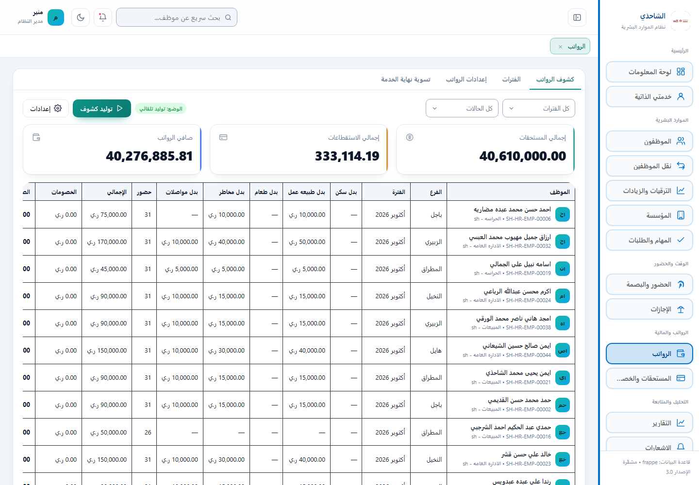
دورة الرواتب الشهرية
- تبويب «الفترات» ← «فترة جديدة»: اختر الشهر والسنة (اسم الفترة والتواريخ تُولَّد تلقائيًا).
- من إجراءات الفترة اضغط «توليد»، أو من تبويب الكشوف اضغط «توليد كشوف» واختر الفترة وطريقة التوليد (تلقائي لكل الموظفين أو يدوي لموظفين محددين — إلزامية).
- راجع الكشوف: الحضور، البدلات، الخصومات، السلف، الصافي.
- عدّل بنود كشف المسودة عند الحاجة ثم اضغط «اعتماد» لكل كشف.
- اضغط «صرف» لتسجيل دفع الراتب وإنشاء القيد المحاسبي.
- بعد اعتماد كل الكشوف أغلق الفترة من تبويب الفترات لمنع أي تعديل لاحق.
إعدادات الرواتب
تحدد طريقة إنشاء الكشوف، واحتساب الغياب والتأخير والإضافي، وطريقة الصرف الافتراضية، وربط البدلات بالتأمينات — تُطبَّق على التوليد التالي.
تسوية نهاية الخدمة
من ملف الموظف اضغط «تسوية نهاية الخدمة» لعرض سنوات الخدمة وآخر راتب ومكافأة الخدمة وأيام الإجازة غير المستخدمة وقيمتها والإجمالي، ثم «حفظ التسوية».
13 المستحقات والخصومات
الرواتب والمالية ← المستحقات والخصومات
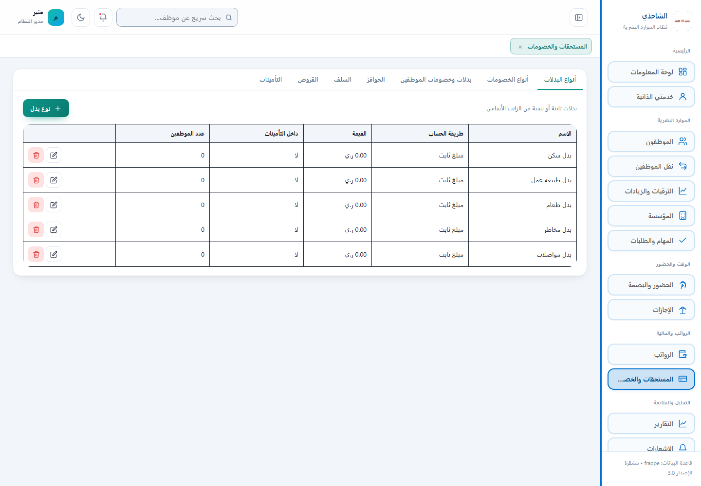
أنواع البدلات والخصومات
لكل نوع اسم وقيمة (إلزاميان)، وطريقة الحساب (مبلغ ثابت أو نسبة من الأساسي). البدل يمكن أن يدخل في وعاء التأمينات أو يكون خاضعًا للضريبة.
إسناد بدل أو خصم لموظف
- تبويب «بدلات وخصومات الموظفين» ← «إسناد بدل/خصم».
- اختر الموظف (إلزامي) والنوع والمبلغ وتاريخ السريان.
- احفظ — يُطبَّق تلقائيًا في كشوف الرواتب من تاريخ السريان.
الحوافز والسلف والقروض
| البند | الحقول الإلزامية | الأثر |
|---|---|---|
| حافز / مكافأة | الموظف، المبلغ | يُضاف إلى كشف الراتب في شهره. |
| سلفة | الموظف، مبلغ السلفة، القسط الشهري | تُخصم الأقساط حتى انتهاء الرصيد. |
| قرض | الموظف، مبلغ القرض، القسط الشهري | أقساط شهرية مع متابعة المتبقي. |
| سداد سلفة/قسط | المبلغ المسدد | يُحدَّث الرصيد المتبقي فورًا. |
التأمينات
ملخص اشتراكات التأمينات للموظفين وفق النسب والسقف والحد الأدنى المعرّفة في الإعدادات العامة.
14 التقارير
التحليل والمتابعة ← التقارير
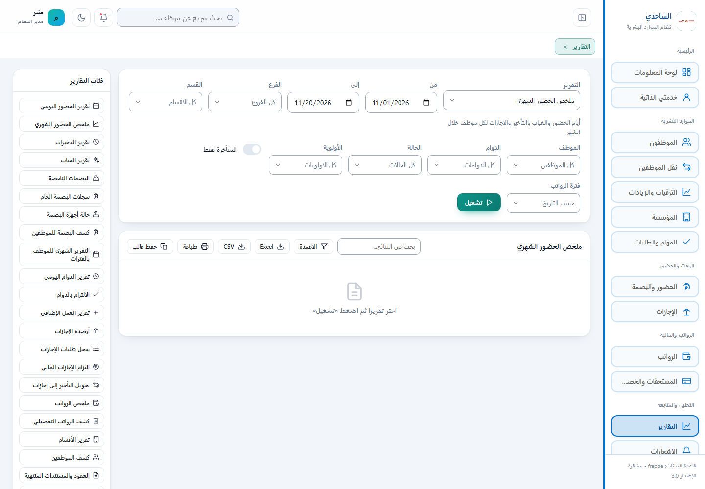
تشغيل تقرير
- اختر التقرير من القائمة أو من «فئات التقارير» (حضور يومي وشهري، تأخيرات، غياب، بصمات ناقصة، بصمة خام، حالة الأجهزة، إجازات، رواتب، تنظيم، تدقيق، مهام…).
- حدّد الفترة والفرع والقسم والموظف والدوام والحالة والأولوية وفترة الرواتب حسب الحاجة.
- اضغط «تشغيل» لعرض النتائج.
- استخدم «الأعمدة» لإظهار/إخفاء أعمدة، و«Excel» أو «CSV» للتصدير، و«طباعة» لطباعة برأس الشركة وتذييل التوقيعات.
- «حفظ قالب» يحفظ الفلاتر والأعمدة باسم يعود إليه لاحقًا.
15 الإشعارات
التحليل والمتابعة ← الإشعارات
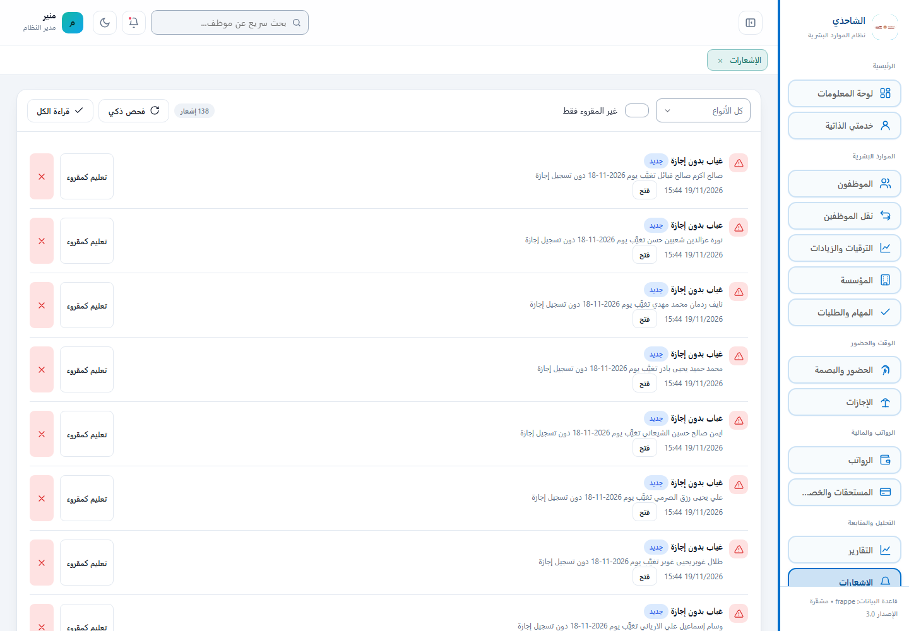
يولّد النظام تنبيهات تلقائية للعقود والمستندات القريبة من الانتهاء، الغياب بدون إجازة، البصمات الناقصة، طلبات الإجازة المعلّقة، وعمليات النقل والترقية. زر «فحص ذكي» يعيد توليد التنبيهات وفق الوضع الحالي، ويمكن تعليم إشعار كمقروء أو حذفه أو فتح الشاشة المرتبطة به.
16 المستخدمون والصلاحيات
الإدارة ← المستخدمون والصلاحيات
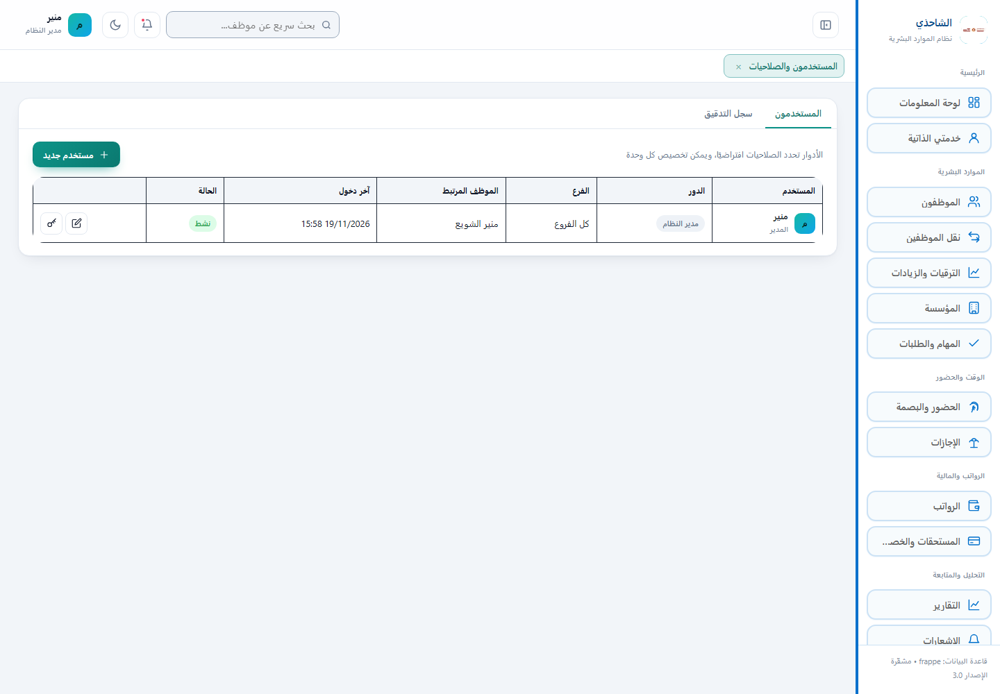
إضافة مستخدم
- اضغط «مستخدم جديد» وأدخل الاسم واسم الدخول وكلمة المرور والدور (إلزامية).
- حدّد الفرع المصرّح (أو اتركه لكل الفروع) والموظف المرتبط لتفعيل «خدمتي الذاتية».
- عند الحاجة خصّص صلاحية كل وحدة (بدون/عرض/إضافة/تعديل/حذف/كل الصلاحيات) لتتجاوز صلاحيات الدور.
- احفظ — يستطيع المستخدم الدخول فورًا، ويُطلب منه تغيير كلمة المرور عند أول دخول إن أُنشئت من لوحة الإدارة.
إدارة الحسابات
- «إعادة تعيين كلمة المرور» تُنشئ كلمة مؤقتة يُطلب تغييرها عند أول دخول.
- «إيقاف الحساب» يمنع الدخول دون حذف السجلات.
- تبويب «سجل التدقيق» يعرض من نفّذ أي عملية ومتى ومن أي جهاز.
17 خدمتي الذاتية
الرئيسية ← خدمتي الذاتية
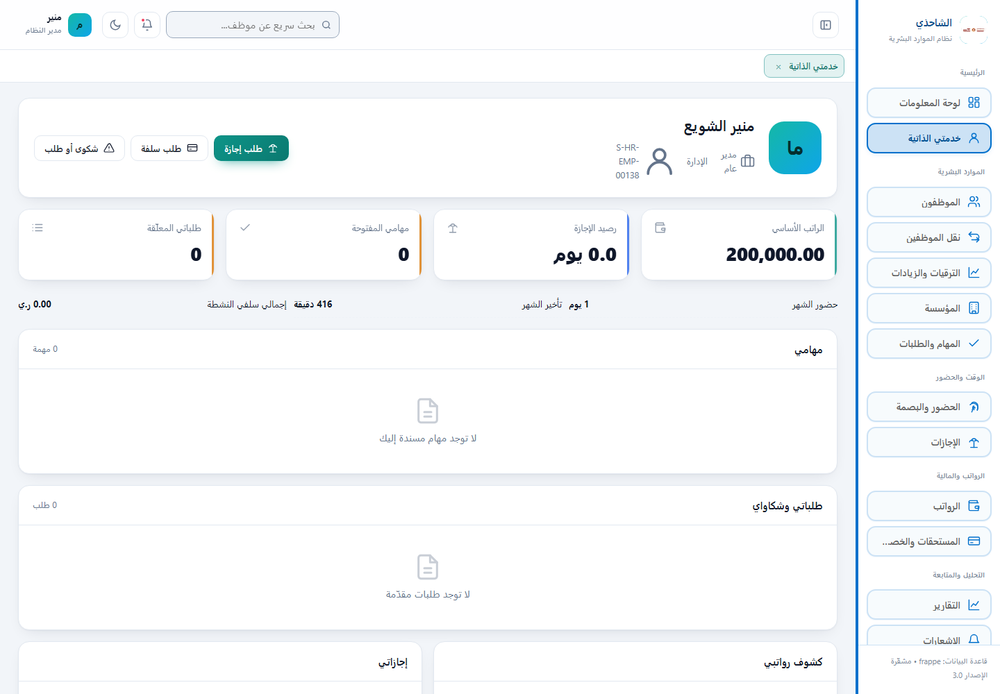
شاشة مخصّصة للموظف بعد ربط حسابه بملف موظف من شاشة المستخدمين. تعرض بياناته الأساسية، حضوره وتأخيره، مهامه ونسب إنجازها، طلباته وحالتها، كشوف رواتبه، إجازاته وأرصدتها. ومنها يقدّم:
- طلب إجازة: النوع والتاريخان إلزامية.
- طلب سلفة: الموضوع والمبلغ إلزاميان.
- شكوى أو طلب عام: الموضوع إلزامي مع التفاصيل.
تصل الطلبات إلى «المهام والطلبات» ليعتمدها المسؤول، ويُحدَّث إشعار الموظف بالنتيجة.
18 إدارة الحسابات (اختياري)
المالية والمحاسبة ← إدارة الحسابات
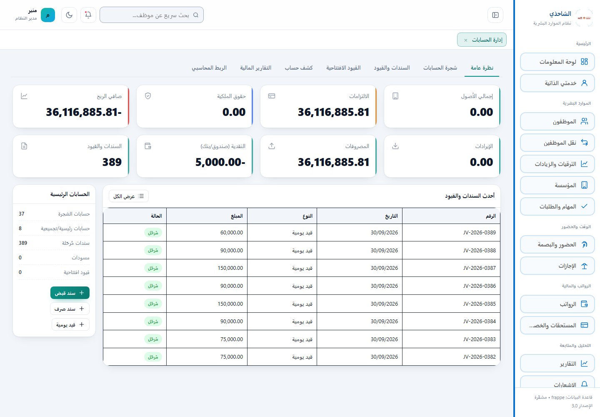
وحدة محاسبية مساندة تُستخدم تلقائيًا عند صرف الرواتب وسداد السلف. تتضمن:
- شجرة الحسابات: أصول، التزامات، حقوق ملكية، إيرادات، مصروفات — مع كود واسم الحساب (إلزاميان).
- السندات والقيود: سند قبض، سند صرف، قيد يومية، قيد افتتاحي (مسودة ← ترحيل).
- كشف حساب: حركة أي حساب بين تاريخين.
- التقارير المالية: ميزان المراجعة، المدينة، الدائنة، وغيرها.
19 حل المشكلات الشائعة
| المشكلة | السبب المحتمل | الحل |
|---|---|---|
| لا تظهر البصمات اليوم | الوسيط متوقف أو الجهاز غير متصل | شغّل الوسيط، وافحص «أجهزة البصمة» (متصل/آخر اتصال)، وتأكد من IP الجهاز. |
| حضور موظف لا يُربط | الرقم الوظيفي لا يطابق رقم الجهاز | وحّد الرقم في ملف الموظف وفي جهاز البصمة. |
| النقل تم لكن البصمة لم تُضف | الوسيط في الفرع الجديد قديم أو بمعرّف فرع مختلف | حدّث الوسيط للنسخة الجديدة، وطابق hrpro_branch_id مع الفرع، ثم أعد نقلًا تجريبيًا أو أضف الرقم يدويًا. |
| حالة المزامنة «في الطابور» طويلًا | لا وسيط يعمل لهذا الفرع | شغّل وسيط الفرع واتركه متصلًا؛ يسحب الأمر خلال دورة واحدة. |
| الغياب يظهر بأرقام كبيرة | بداية تتبع الحضور غير مضبوطة أو لا توجد بصمات | اضبط «بداية تتبع الحضور»، ثم «معالجة الفترة»، وصحّح الأيام بالمعالجات. |
| لا يمكن توليد كشوف | لا توجد فترة مفتوحة | أنشئ فترة رواتب جديدة من تبويب الفترات. |
| توقيع المطبوعات فارغ | لم تُدخل أسماء الموقّعين | الإعدادات ← عام ← اسم مدير الموارد البشرية واسم المدير العام، ثم احفظ. |
| شاشة بيضاء أو تعديلات لا تظهر | نسخة قديمة في كاش المتصفح | اضغط Ctrl+F5 لتحديث قوي. |
| نسيت كلمة المرور | لا يمكن استرجاعها | يعيد مدير النظام تعيينها من شاشة المستخدمين. |
20 ملحق: الحقول الإلزامية في كل شاشة
| الشاشة | الحقول الإلزامية |
|---|---|
| التهيئة الأولى | اسم الشركة، اسمك الكامل، اسم الدخول، كلمة المرور (8 أحرف + رقم). |
| تسجيل الدخول | اسم المستخدم، كلمة المرور. |
| الإعدادات ← عام | اسم الشركة. |
| فرع جديد | اسم الفرع. |
| قسم جديد | اسم القسم. |
| رتبة جديدة | اسم الرتبة. |
| عطلة رسمية | المناسبة، التاريخ. |
| موظف جديد | الاسم، الرقم الوظيفي، الفرع، تاريخ التعيين، الراتب الأساسي. |
| مستند موظف | اسم المستند. |
| نقل موظف | الموظف، الفرع الجديد، تاريخ النقل. |
| ترقية / زيادة | الموظف، نوع التغيير، تاريخ السريان، وحقل تغيير واحد على الأقل. |
| مهمة جديدة | عنوان المهمة، الموظف المسؤول، تاريخ الاستحقاق. |
| طلب موظف (خدمة ذاتية) | الموضوع (والمبلغ لطلب السلفة). |
| جهاز بصمة | اسم الجهاز، الفرع، عنوان IP. |
| معالجة بصمة | الموظف، التاريخ، نوع المعالجة. |
| طلب إجازة | الموظف، نوع الإجازة، من تاريخ، إلى تاريخ. |
| نوع إجازة | اسم النوع، الأيام المستحقة سنويًا. |
| تسوية رصيد إجازات | الموظف، نوع الإجازة، عدد الأيام. |
| فترة رواتب | الشهر، السنة. |
| توليد كشوف | فترة الرواتب (والموظفون في الوضع اليدوي). |
| نوع بدل / خصم | الاسم، القيمة. |
| حافز / مكافأة | الموظف، المبلغ. |
| سلفة / قرض | الموظف، المبلغ، القسط الشهري. |
| مستخدم جديد | الاسم، اسم الدخول، كلمة المرور، الدور. |
| حساب محاسبي | كود الحساب، اسم الحساب. |
دليل استخدام نظام الموارد البشرية الاحترافي — من شركة نيو سمارت تك، تطوير المهندس منير الشويع.
للدعم والتحديثات تواصل مع إدارة التقنية في الشركة. يُحدَّث هذا الدليل مع كل إصدار جديد من النظام.